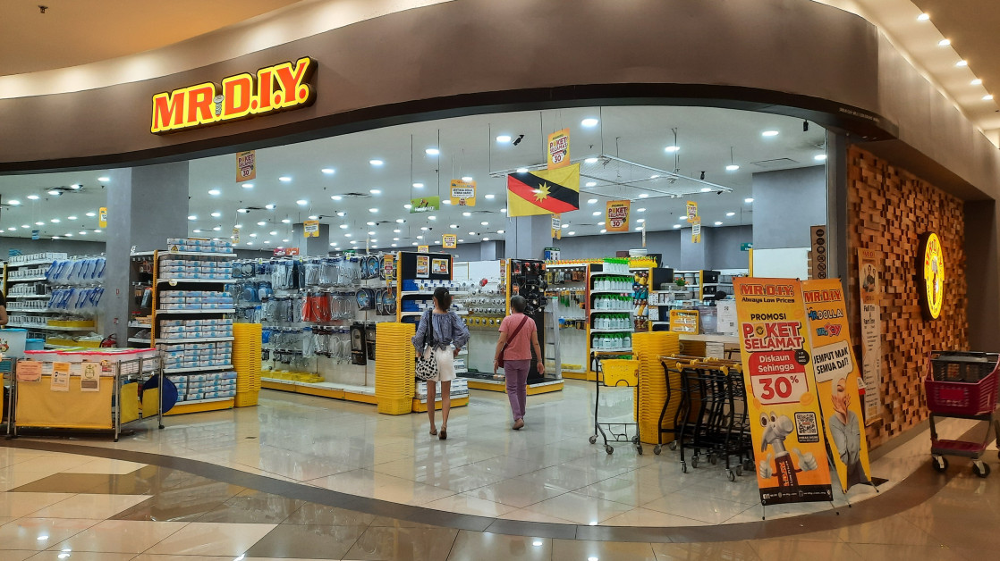

A Barkácsáruház története
A DIY Barkácsáruház 2005-ben nyitotta meg kapuit Budapest szívében, és azóta is töretlenül szolgálja ki a barkácsolás szerelmeseit. Az áruházunk célja, hogy minden vásárlónknak elérhetővé tegyük a legjobb minőségű alapanyagokat, szerszámokat és festékeket, legyen szó kisebb otthoni felújításról vagy nagyobb építkezési projektekről.
Az induláskor mindössze egy kis üzlettel kezdtünk, de az évek során jelentősen bővültünk, és mára az egyik legnagyobb barkácsáruházzá váltunk a régióban. Hatalmas választékunkban a faanyagtól kezdve a festékeken át, egészen a legmodernebb szerszámokig minden megtalálható, amit csak egy barkácsoló megkívánhat.
2015-ben áruházunk online szolgáltatásokat is bevezetett, így vásárlóink már az otthonuk kényelméből is rendelhetnek. Üzletünk filozófiája, hogy nemcsak termékeket adunk el, hanem tanácsokkal is segítjük vásárlóinkat, hogy a legjobb megoldást találják meg projektjeikhez.

Miért válassza a DIY Barkácsáruházat?
- Széles termékkínálat – több mint 10 000 különféle barkács- és építőipari termék
- Professzionális tanácsadás és segítőkész munkatársak
- Kedvező árak és rendszeres akciók
- Gyors és kényelmes online rendelési lehetőség
- Rugalmasság és ügyfélközpontú megközelítés
Célunk, hogy vásárlóink elégedettek legyenek, és minden eszközt megadunk ahhoz, hogy sikeres projektjeik legyenek. Várjuk Önt is üzletünkben vagy webáruházunkban!